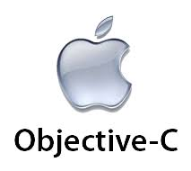

programacion orientada a objetos
C++

Objective C.
Java

Smalltalk
Eiffel
Ruby

python
programacion estructurada
ADA.
PL.
PL.
PL.

TKINDER
Tkinder es un binding(ligadura) de la biblioteca grafica(lenguaje de herramientas de comando) para el lenguaje de programación Python.se considera un estándar para la interfaz grafica del usuario(GUI) para Python y es el que viene por defecto con la instalación para Microsoft Windows.
GUI
La interfaz gráfica de usuario, conocida como (GUI) en inglés (graphicla user interface), es un programa informático que actúa de interfaz de usuario, utilizando un conjunto de imágenes y objetos gráficos para presentar la información y acciones disponibles en la interfaz el principal uso consiste en proporcionar un entorno visual sencillo para permitir la comunicación con el sistema operativo de una maquina o un computador
Como instalar tkinder por consola
Ejecutar python -m tkinter desde la línea de comandos debería abrir una ventana que demuestre una interfaz Tk simple para saber si tkinter está instalado correctamente en su sistema. También muestra qué versión de Tcl/Tk está instalada para que pueda leer la documentación de Tcl/Tk específica de esa versión.
Como comenzar a usar Tkinder
import tkinter O, más a menudo: from tkinter import *
¿Que es Python?
Python es un lenguaje de programación interpretado,de alto nivel y de propósito general. La filosofía de diseño de Python enfatiza la legibilidad del código con su notable uso de espacios en blanco significativos.
Fecha de creacion:
Python fue creado a finales de la década de 1980, y lanzado por primera vez en 1991, por Guido van Rossum como sucesor del lenguaje de programación ABC
Version
Las dos versiones más utilizadas tienen Python 2.x y 3.x. Hay mucha competencia entre los dos y ambos parecen tener un buen número de diferentes bases de fans.

Clase
Una clase es la descripción de un conjunto de objetos similares; consta de métodos y de datos que resumen las características comunes de dicho conjunto. Una clase es un esquema o plantilla que se usa para definir o crear objetos.
Objeto
un objeto es un ente orientado a objetos (programa de computadoras) que consta de un estado y de un comportamiento, que a su vez constan respectivamente de datos almacenados y de tareas realizables durante el tiempo de ejecución
Metodo
Son procedimientos y funciones que se invocan para actuar sobre los objetos y especifican cómo se ejecuta un mensaje.
Atributo
Los atributos son las caracterísiticas individuales que diferencian un objeto de otro y determinan su apariencia, estado u otras cualidades. Los atributos se guardan en variables denominadas de instancia, y cada objeto particular puede tener valores distintos para estas variables.
Herencia
Es el mecanismo por el cual una clase permite heredar las características (atributos y métodos) de otra clase.
Abstracion
Una abstracción puede definirse como: las características especificas de un objeto, aquellas que lo distinguen de los demás tipos de objetos y que logran definir límites conceptuales respecto a quien está haciendo dicha abstracción del objeto
Propiedad
Una propiedad es un identificador con un determinado tipo de dato que accede normalmente a un campo en forma directa o a través de un método.
Paradigma de programacion
Un paradigma de programación es una manera o estilo de programación de software. Existen diferentes formas de diseñar un lenguaje de programación y varios modos de trabajar para obtener los resultados que necesitan los programadores.